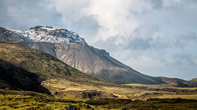
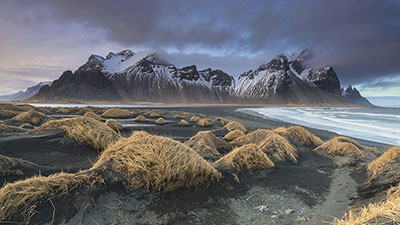

Fotogalerie

Myvatn Aurora
Photo © Kriss Williams
Photo © Kriss Williams

Mountains in Iceland
Photo © Kamil Porembiński
Photo © Kamil Porembiński

Life on Mars
Photo © Kriss Williams
Photo © Kriss Williams

Stokksnes Sands
Photo © Kriss Williams
Photo © Kriss Williams

Svartifoss (Black Fall)
Photo © Ron Kroetz
Photo © Ron Kroetz
Landmannalaugar
Photo © Michel Osmont
Photo © Michel Osmont
Iceland
Photo © Eric Montford
Photo © Eric Montford

Bruarfoss waterfalls
Photo © Moyan Brenn
Photo © Moyan Brenn

Jokulsarlon glacier lagoon
Photo © Moyan Brenn
Photo © Moyan Brenn